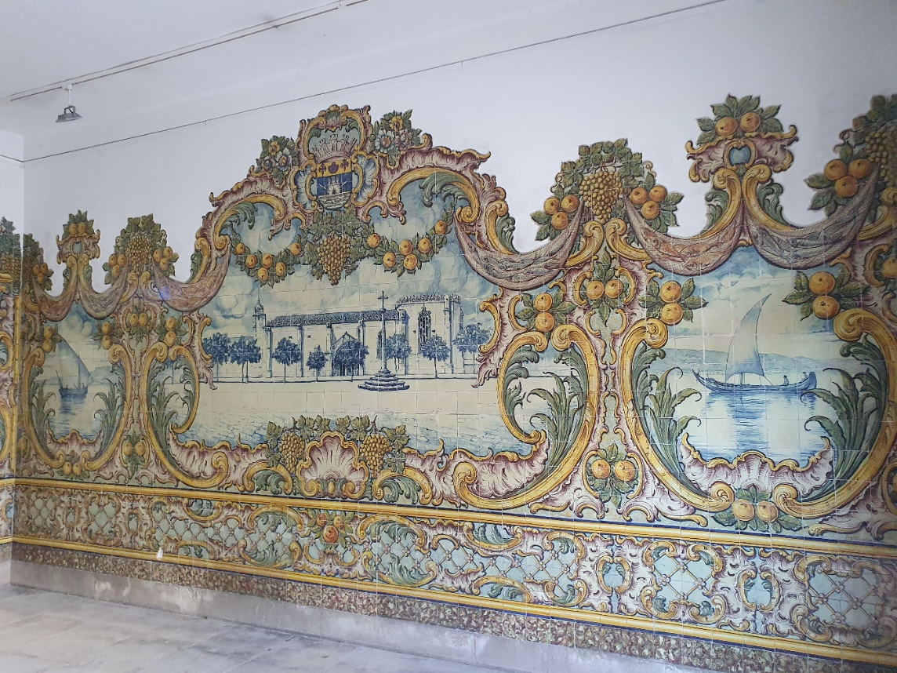
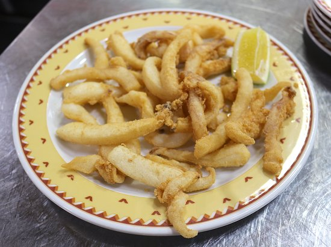

Today · Sun 21 June · The easy version
An Easy Afternoon
We started late and it's hot, so today is trimmed to the essentials: the covered market in Setúbal before it shuts at two, an unhurried lunch, the pool through the worst of the afternoon, and our table in Azeitão for dinner. One short drive out, one short drive back.
The plan — do less, end at dinner

Straight to the market
Setúbal — and lunch right after
It closes at two, so it's the one timed thing today: head in first. The covered Mercado do Livramento is wrapped in tiled fishing scenes — cool, busy, free. A loop of the stalls, then lunch two minutes away on Avenida Luísa Todi.

- Mercado do Livramento Closes ~2pmA vast covered market in azulejo — fish, fruit, cheese, flowers. Cool and free; go straight there before it shuts.
- Lunch — choco frito Local dishSetúbal's fried cuttlefish, two minutes from the market. Casa Santiago or O Baluarte do Sado on Avenida Luísa Todi.
Back to the pool
Out of the heat for a few hours — pool, shade, naps. Nothing is booked until dinner, so there's no clock on the afternoon. If anyone gets restless later, Azeitão is five minutes away for a wander and a cheese run before your table.
Dinner at Casa das Tortas
the reservation, in Azeitão
The table you already booked, on Praça da República in the heart of Azeitão — five minutes from the house. Courtyard grill, black pork, fish off the BBQ, local wine, and the cheese and tortas the village is named for.

- Casa das Tortas Reserved · 7:30Black pork, fish off the courtyard BBQ, local wine, and — of course — the cheese and tortas.
 Queijo & tortas de Azeitão If you're earlySwing through the village a little before your table — grab the soft sheep's cheese and the rolled tortas to take home.
Queijo & tortas de Azeitão If you're earlySwing through the village a little before your table — grab the soft sheep's cheese and the rolled tortas to take home.
The fuller versions → Out of the Sun (Setúbal & Azeitão) · Castle, Coast & Cheese